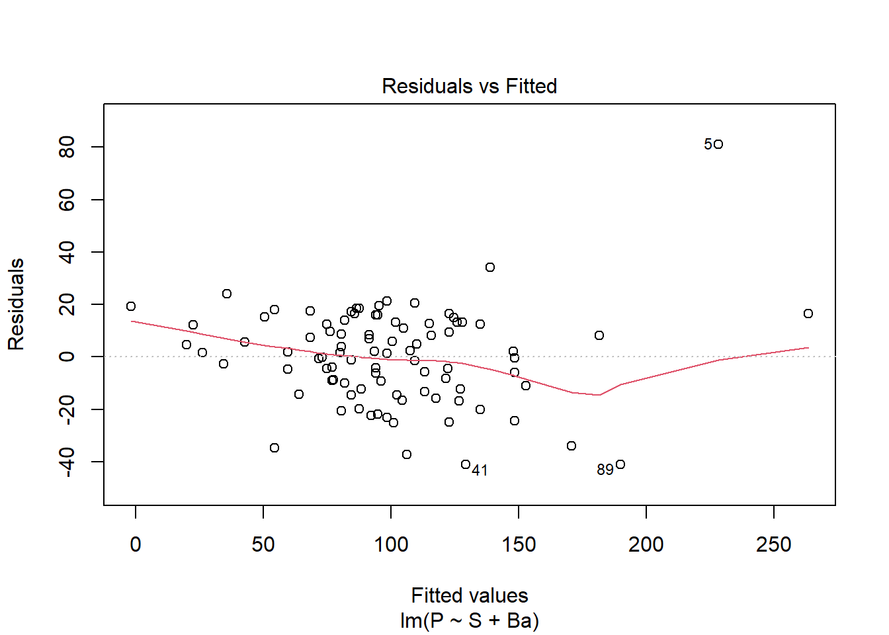
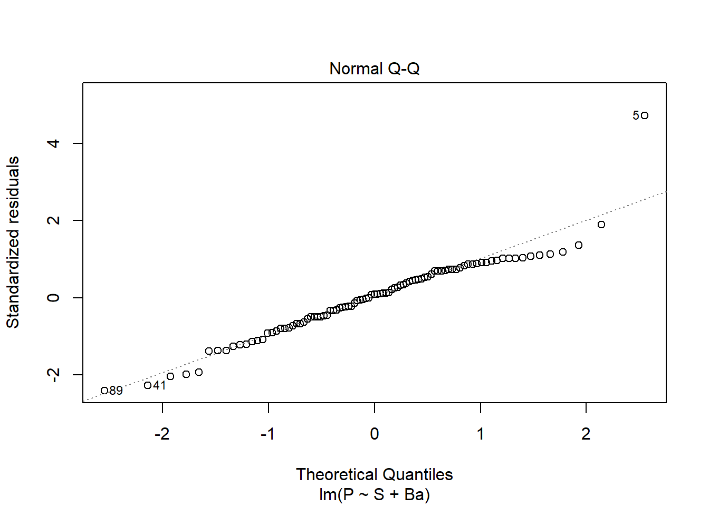
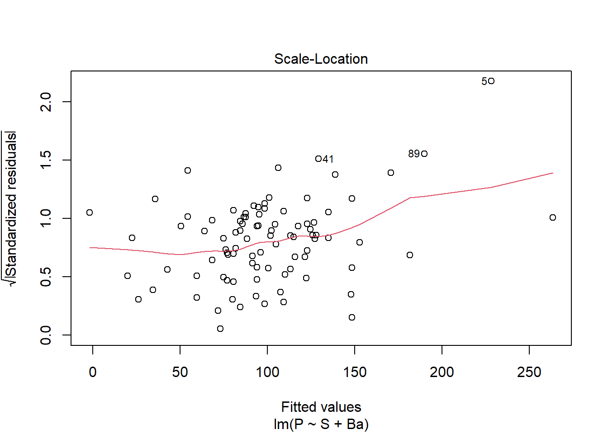
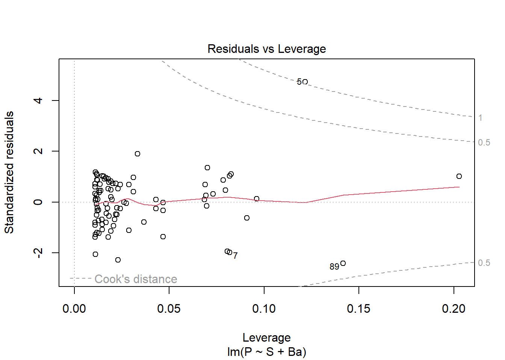
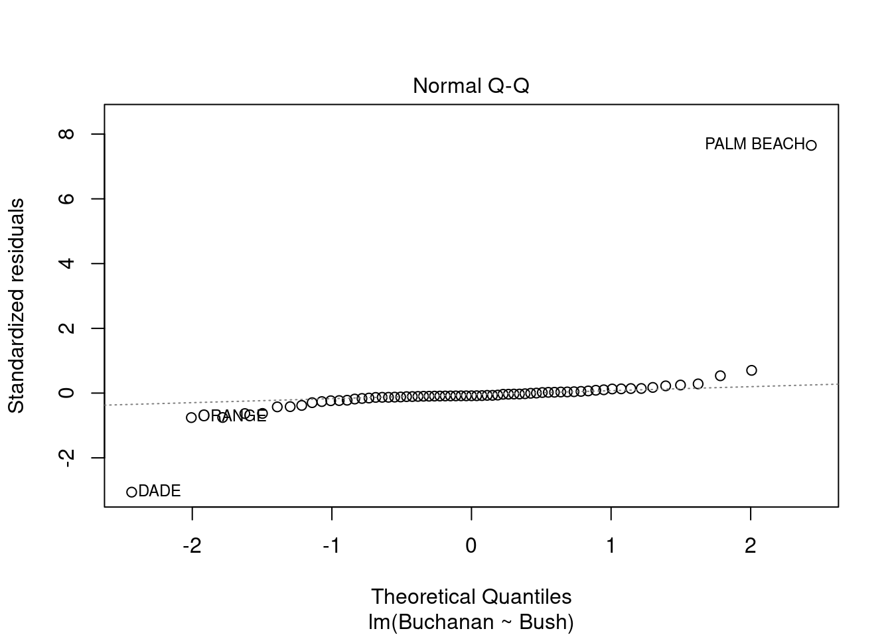
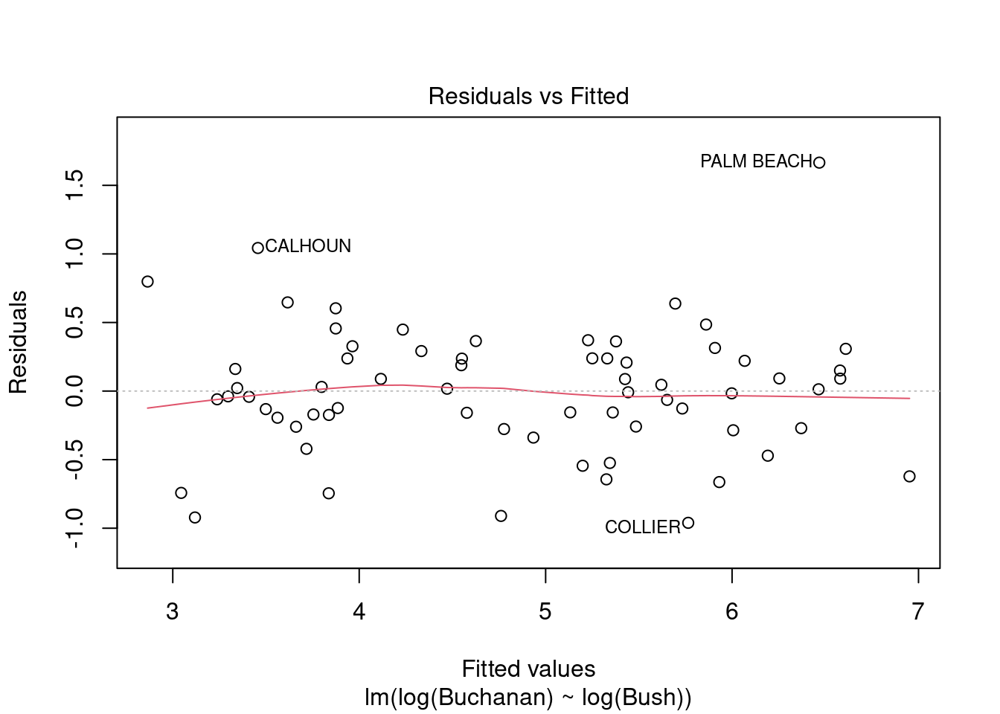

Loading required package: car
Loading required package: carData
Attaching package: 'car'
The following object is masked from 'package:dplyr':
recode
The following object is masked from 'package:purrr':
some
Loading required package: effects
lattice theme set by effectsTheme()
See ?effectsTheme for details.
Code
library(smss)library(stargazer)
Please cite as:
Hlavac, Marek (2022). stargazer: Well-Formatted Regression and Summary Statistics Tables.
R package version 5.2.3. https://CRAN.R-project.org/package=stargazer
A
Variables Beds would be removed first. It’s P-value does not meet statistically significant threshold.
B
For the opposite reason, Size would be added first.
C
Beds is most likely auto-correlated with Size, as bedrooms make up a substantial amount of square footage in a house, driving up the price. However, that is not the only factor if pricing, as is most likely why the number – which can be high – does not necessarily mean we see an improved price. Conversely, this is not the case for bathrooms.
D
Code
data(house.selling.price.2)model_1 <-lm(P ~ S + Ba, data = house.selling.price.2)plot(model_1)




Code
stargazer(model_1)
% Table created by stargazer v.5.2.3 by Marek Hlavac, Social Policy Institute. E-mail: marek.hlavac at gmail.com
% Date and time: Fri, Dec 09, 2022 - 6:39:51 PM
\begin{table}[!htbp] \centering
\caption{}
\label{}
\begin{tabular}{@{\extracolsep{5pt}}lc}
\\[-1.8ex]\hline
\hline \\[-1.8ex]
& \multicolumn{1}{c}{\textit{Dependent variable:}} \\
\cline{2-2}
\\[-1.8ex] & P \\
\hline \\[-1.8ex]
S & 63.863$^{***}$ \\
& (4.840) \\
& \\
Ba & 22.448$^{***}$ \\
& (6.130) \\
& \\
Constant & $-$49.752$^{***}$ \\
& (9.183) \\
& \\
\hline \\[-1.8ex]
Observations & 93 \\
R$^{2}$ & 0.833 \\
Adjusted R$^{2}$ & 0.829 \\
Residual Std. Error & 18.267 (df = 90) \\
F Statistic & 224.114$^{***}$ (df = 2; 90) \\
\hline
\hline \\[-1.8ex]
\textit{Note:} & \multicolumn{1}{r}{$^{*}$p$<$0.1; $^{**}$p$<$0.05; $^{***}$p$<$0.01} \\
\end{tabular}
\end{table}
Code
PRESS <-function(model) { i <-residuals(model)/(1-lm.influence(model)$hat)sum(i^2)}PRESS(model_1)
Note: observation #5 is an outlier and violates many of these diagnostic plots. If we log transform either P or S, observation #7 does the same. Therefore, we will keep the model as-is and not transform it.
I chose this model as the other two variables Beds and New either do not meet the P-value threshold or have a low correlation to Price. The other two variables have a high correlation with Price.
model_q2 <-lm(Volume ~ Girth + Height, data = trees)
Fitted.
B
Code
plot(model_q2)
Both of the Residuals vs. Fitted plots are violated, as they form a U-shape instead of a horizontal line; Cook’s Distance plot is violated as row 31 is outside of the 0.5 dotted line. The Normal Q-Q plot seems fine. The Scale Location plot does not look good, as it has a U-shape as well.
Question 3
Code
data(florida)head(florida)
Gore Bush Buchanan
ALACHUA 47300 34062 262
BAKER 2392 5610 73
BAY 18850 38637 248
BRADFORD 3072 5413 65
BREVARD 97318 115185 570
BROWARD 386518 177279 789
A
Code
model_q3a <-lm(Buchanan ~ Bush, data = florida)plot(model_q3a)

Yes, Palm Beach County is an outlier. This is especially apparent with Cook’s Distance plot, as it is outside the 1.0 dotted line.
B
Code
model_q3b <-lm(log(Buchanan) ~log(Bush), data = florida)plot(model_q3b)

The findings do change, as all observations that violated the tests are now within the lines/meet assumptions.
Source Code
---title: "Homework 5"author: "Caleb Hill"desription: "The fifth homework on regressions"date: "12/08/2022"format: html: toc: true code-fold: true code-copy: true code-tools: truecategories: - hw5 - regression---# Question 1First, let's load the relevant libraries and set all the graph themes to minimal.```{r, results='hide'}library(readxl)library(tidyverse)library(dplyr)library(alr4)library(smss)library(stargazer)```## AVariables `Beds` would be removed first. It's P-value does not meet statistically significant threshold.## BFor the opposite reason, `Size` would be added first.## C`Beds` is most likely auto-correlated with `Size`, as bedrooms make up a substantial amount of square footage in a house, driving up the price. However, that is not the only factor if pricing, as is most likely why the number -- which can be high -- does not necessarily mean we see an improved price. Conversely, this is not the case for bathrooms.## D```{r}data(house.selling.price.2)model_1 <-lm(P ~ S + Ba, data = house.selling.price.2)plot(model_1)stargazer(model_1)``````{r}PRESS <-function(model) { i <-residuals(model)/(1-lm.influence(model)$hat)sum(i^2)}PRESS(model_1)``````{r}broom::glance(model_1)```Note: observation #5 is an outlier and violates many of these diagnostic plots. If we log transform either P or S, observation #7 does the same. Therefore, we will keep the model as-is and not transform it.R2 = 0.83Adjusted R2 = 0.83PRESS = 34.174.5AIC = 809.23BIC = 819.36## EI chose this model as the other two variables `Beds` and `New` either do not meet the P-value threshold or have a low correlation to `Price.` The other two variables have a high correlation with `Price.`# Question 2```{r}data(trees)head(trees)```## A```{r}model_q2 <-lm(Volume ~ Girth + Height, data = trees)```Fitted.## B```{r}plot(model_q2)```Both of the Residuals vs. Fitted plots are violated, as they form a U-shape instead of a horizontal line; Cook's Distance plot is violated as row 31 is outside of the 0.5 dotted line. The Normal Q-Q plot seems fine. The Scale Location plot does not look good, as it has a U-shape as well.# Question 3```{r}data(florida)head(florida)```## A```{r}model_q3a <-lm(Buchanan ~ Bush, data = florida)plot(model_q3a)```Yes, Palm Beach County is an outlier. This is especially apparent with Cook's Distance plot, as it is outside the 1.0 dotted line.## B```{r}model_q3b <-lm(log(Buchanan) ~log(Bush), data = florida)plot(model_q3b)```The findings do change, as all observations that violated the tests are now within the lines/meet assumptions.